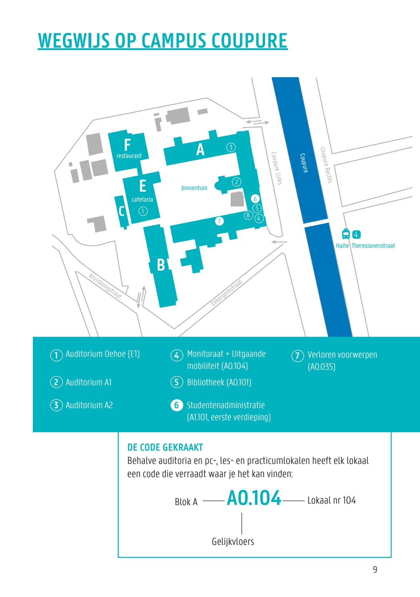

About Data2Animals
A short introduction to the Data2Animals research website, LANUPRO, and how to find us at Campus Coupure.
Data2Animals is the public research website for data-facing work in monogastric animal nutrition at LANUPRO, Ghent University. It collects information about research themes, projects, services, publications, datasets, software, and events in a format that can grow gradually from structured source material.
Research focus
The group studies nutritional interventions in monogastric animals, mainly pigs and poultry. Current interests include digestive physiology, feed and ingredient evaluation, feed additives, precision feeding, electronic monitoring systems, computer vision, and data models that help interpret animal performance and health.
The work combines controlled animal experiments, laboratory analysis, and practical questions from animal nutrition. The aim is to keep the research useful, careful, and transparent: good measurements, clear interpretation, and methods that can help improve nutrient use, animal health, and welfare.
More information about the people behind the work is available on the team page.
Contact
Administration office
+32 9 264 9001
Campus
Coupure Links 653, B-9000 Ghent
Location
Block F, 1st floor
Laboratory for Animal Nutrition and Animal Product Quality (LANUPRO)
Department of Animal Sciences and Aquatic Ecology
Faculty of Bioscience Engineering
Ghent University
Campus Coupure, Block F, 1st floor
Coupure Links 653
B-9000 Ghent
Belgium
Visiting Campus Coupure
The campus entrance is at Coupure Links 653. If you come by car, use the Campus Coupure parking area; access is possible via Kruisboogstraat. Press the button at the entrance barrier. If a parking coin is needed to leave the parking area, this can be arranged during the visit.
After entering the campus, walk to Block F. Take the stairs or lift to the 1st floor and register at the LANUPRO reception.

For meetings in room F0.2 Capra, first come to the LANUPRO reception unless agreed otherwise.